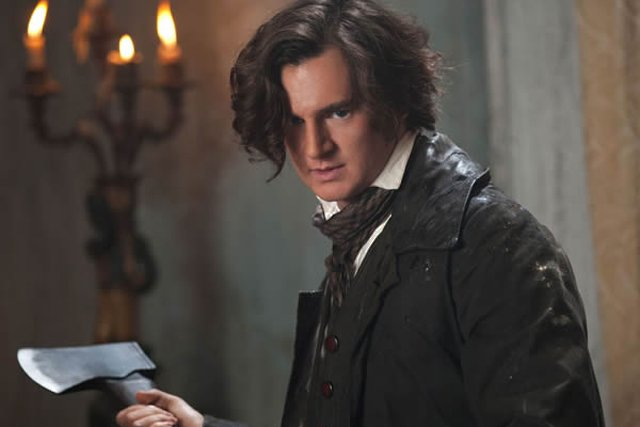
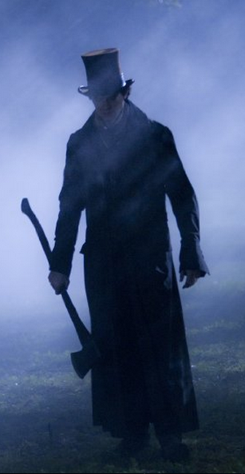

|
Historians seem more than a little befuddled by the film Abraham Lincoln: Vampire
Hunter. A recent piece in the New York Times by Harvard historian Jill Lepore
mused about why "the literary bloodbath" of vampire tales has continued for decades. In
the same piece, historian David W. Blight wonders if vampire stories are getting stale and
if the Great Emancipator might have been a way to leaven the undead lump.
Reading this piece gave me the distinct impression that none of these historians have
spent much time with vampire fiction, which is, of course, more than ok. Both are
important scholars in the profession and have award-winning books to write that may keep
them from watching much True Blood. Still, what Seth Grahame-Smith pulled off in
the novel deserves a bit more from historians than a sort of "wow, vampires are kind of a
thing right now" response.
I'm writing this not only as a historian of America's narratives of horror but as a
college classroom teacher who has used the novel as a text with history majors. Indeed, we
read it together in a class with the narcolepsy-inducing title of "The Historian's Craft."
|

A young Abraham Lincoln (Benjamin Walker)
begins his career as a vampire hunter.
|
This is the class that all history majors, on pain of not graduating, have to take to
learn methodology and other supremely boring things.
Why assign it in a class that is supposed to be a gateway drug for history majors? At
least some of my colleagues probably think I'm trying to be trendy. Unfortunately, your
average college sophomore has nothing but undisguised contempt for anyone who tries to
play the cool teacher (indeed, my demeanor screams "still plays D&D in his mom's basement"
rather than trendy).
No, I wanted my students to think about how primary historical sources, the raw
material of history, can be repurposed in surprising ways. If you've read the novel, you
know that Grahame-Smith uses materials from Lincoln's speeches and 19th century newspapers
to recreate the 19th century, indeed to give it a lived-in sort of feeling. Many of my
students came away from the book wanting to read some good Lincoln biographies and
histories of the era. I pointed them to David Blight, among others.
But we talked about another aspect of the book that I'm hoping serves as a major theme
in the film. If you've read the novel, you know it's a dark rendering of America's secret
history, the idea that dark powers have moved through the structures of American culture
since the beginning. These evil powers, which in 1860 wanted a nation of their own, see
human enslavement as a way to feed their appetites.
In my early discussions with my students, this was actually one aspect of the book that
troubled me a bit. Didn't this equation of vampire conspiracies and slavery serve to
undermine the struggle to move slavery to the center of the American narrative, especially
in discussions about the meaning of the Civil War? Fictionalizing it seemed to deal with a
serious subject in a silly way.
My students helped me to see it a little differently. On some level, the elements of
the fantastic in the novel point to deep, if hard to bear, truths about America.
Grahame-Smith actually ties the great vampire plot to notions of "the Slave Power" in
American life, an image employed by the abolitionist movement to describe how southern
political influence, even over the Founding Documents, had left the republic twisted by
inhuman bondage.
Moreover, its not that horror narratives of various kinds haven't always been a part of
the story of slavery. Slaves in the colonial era created a complex folklore about the
southern master class, worrying that slave traders were cannibals. My research uncovered
at least one case in Louisiana which newly imported slaves became convinced that the
masters were witches and vampires (after watching them drink red wine).
These tales of terror illuminate rather than obscure important truths. Slavery did
represent a kind of dark magic in which legal fictions transmogrified the bodies of human
beings into property. The institution of slavery did become a kind of cannibalism,
|

Abraham Lincoln: Vampire Hunter places
two familiar elements of the Lincoln story at the center of the movie:
His stovepipe hat and his axe.
|
swallowing millions from the African continent, digesting them in the rice and cotton
fields in the relentless pursuit of wealth that characterized the alleged southern
"aristocrats."
America needed a vampire hunter in 1860.
A few historians might worry about how the film might lose the novel's historical
flavor in an effort to shape an action flick that, all signs indicate, will spurt enough
gore to please the most jaded horror aficionado. I think the historical profession's angst
should be focused elsewhere. Our students, and the general public, are unlikely to come
away from the film convinced of its historical accuracy. But they do encounter poisonous
fictions all around them that more insidiously mangle the past.
I recently found myself at the Museum of the Confederacy in Richmond, Va. Here amidst
the rather sparse collections of buttons, uniforms, muskets and other military fetishes,
we received an utterly worthless tour of "The White House of the Confederacy," Jefferson
Davis' home during the war. Our guide (who insisted on being called Sgt. Major) gave us a
series of ideological tirades about the "true" story of the Southern cause. He managed to
gloss over slaveholding and portray Davis, his cabinet and his warlords as fine examples
of American patriotism. Unbelievably, he would not invoke the name of Abraham Lincoln,
apparently in fear of raising his angry shade on him in the sacred precincts of the
Confederate seat of power. The man who kept the U.S. from becoming a balkanized patchwork
that included a slaveholding imperium was simply referred to as "the Gentleman from
Illinois."
Historians shouldn't worry that the general public might decide that Abraham Lincoln
spent his free time staking and decapitating vampires. We have bigger worries given the
amount of historical undergrowth that twines itself around so many of our sites of public
history. There are, in reality, some very dark forces that need slaying in American memory
and historians need to pick up the hatchet and start swinging.
Source: W. Scott Poole in The Huffington Post (June 20, 2012).
|